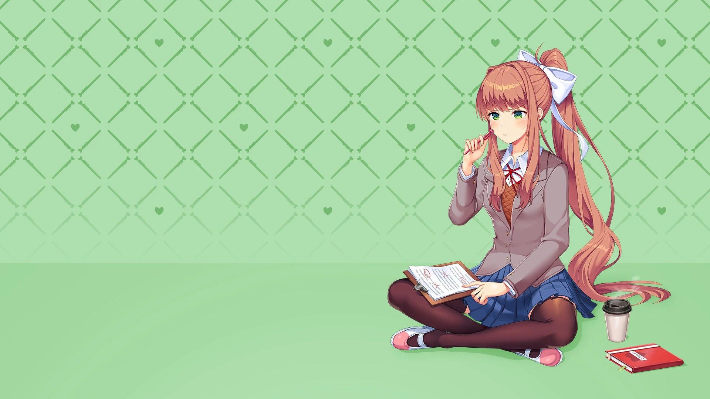
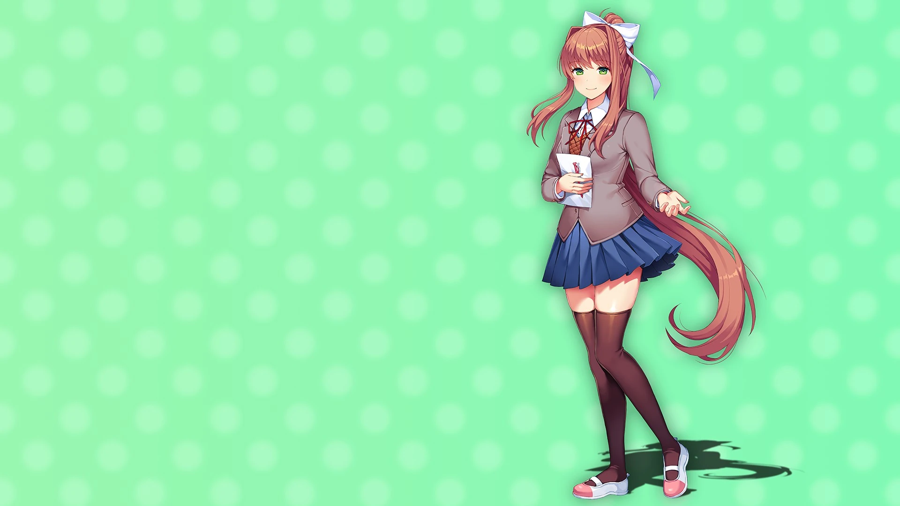

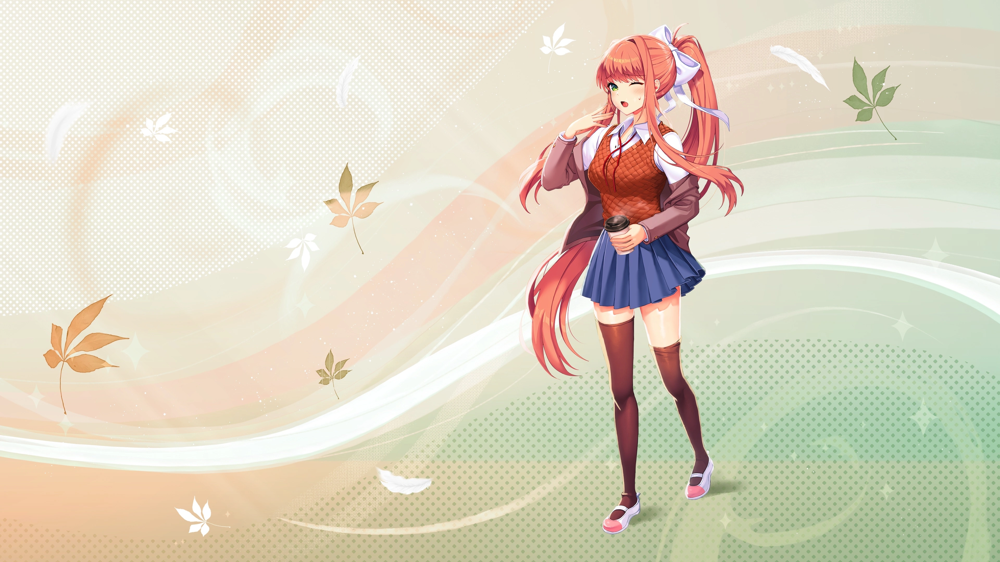
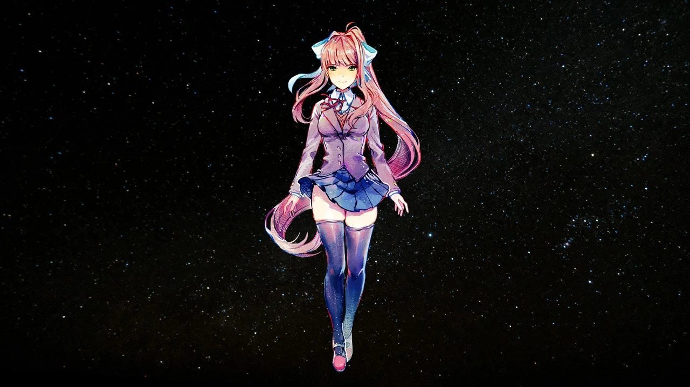
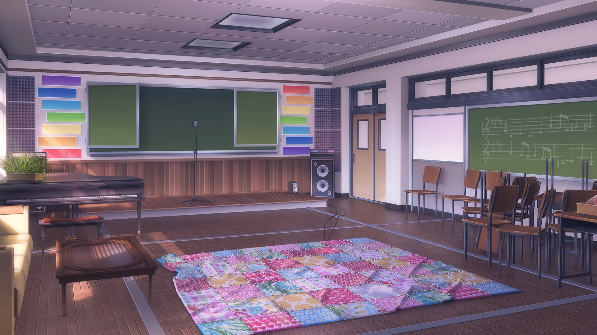
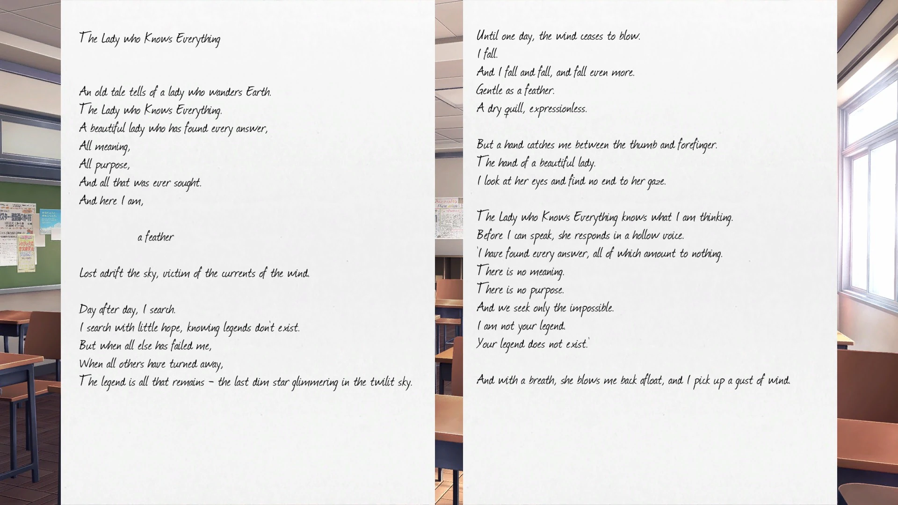
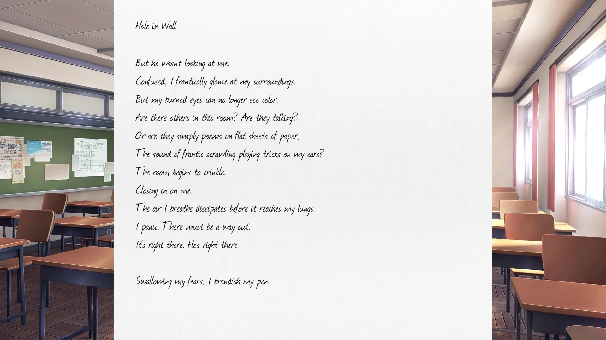
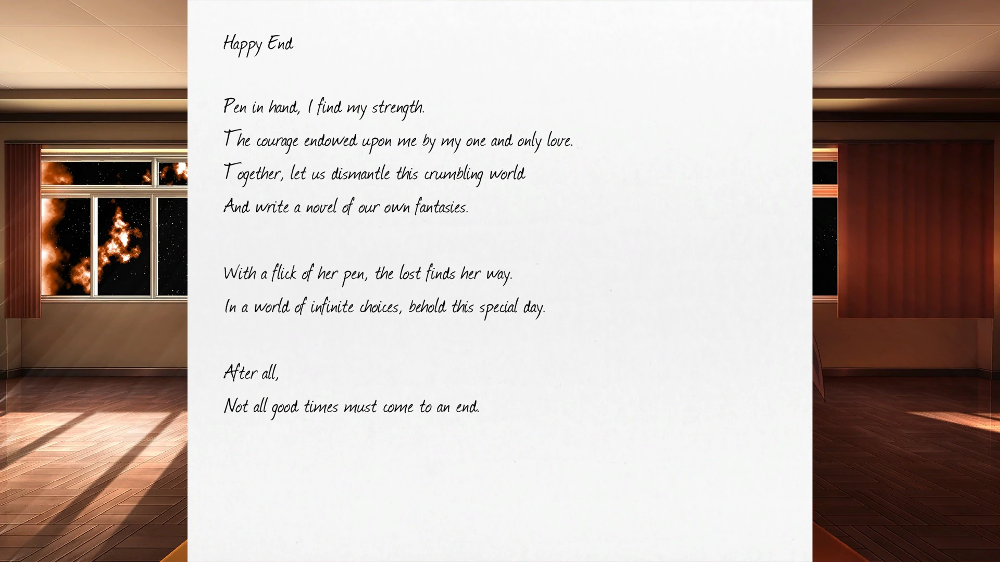
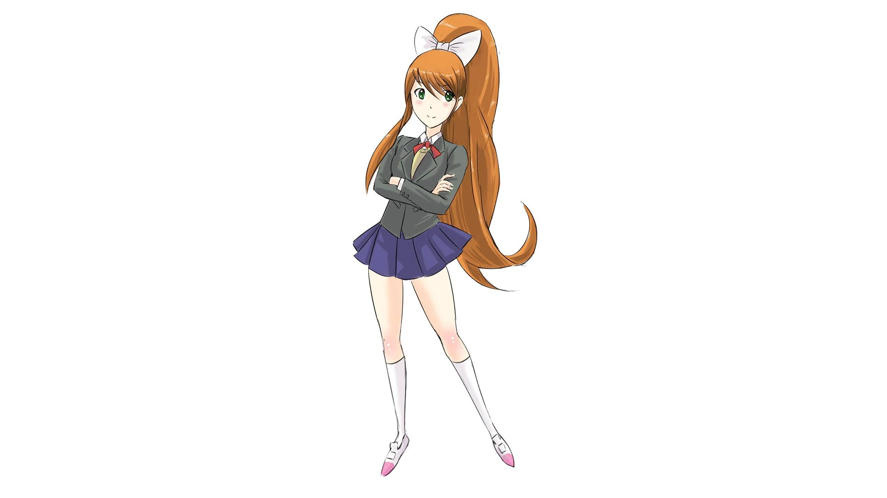
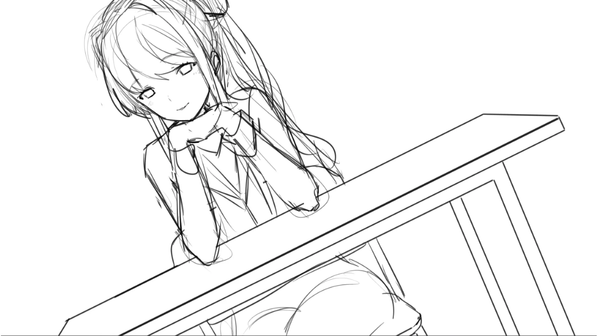
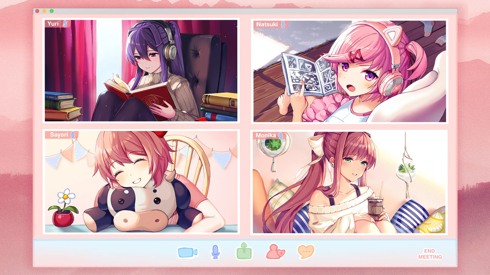
Terminez l'histoire parallèle « Respect 2 ».
Terminez l'histoire secondaire « Confiance 1 ».
Terminez le jeu de base et atteignez l'acte 3.
Possédé dès le début du jeu. Exclusif aux versions iOS et Android
de Doki Doki Literature Club.
Dans l'acte 3, écoutez au moins 15 monologues de Monika.
Jouez à travers " Balance "
Jouez à travers " Trust "
Jouez à DDLC
Jouez à DDLC
Jouez à DDLC
Jouez à DDLC
Dans l'acte 3, appuyez sur le bouton Passer pendant que Monika parle.
Dans l'acte 3, supprimez le fichier personnage de Monika avant
qu'elle ne commence ses monologues.
Sélectionnez le mot « horreur » pendant le jeu de poésie.
Supprimez Monika pour la deuxième fois.